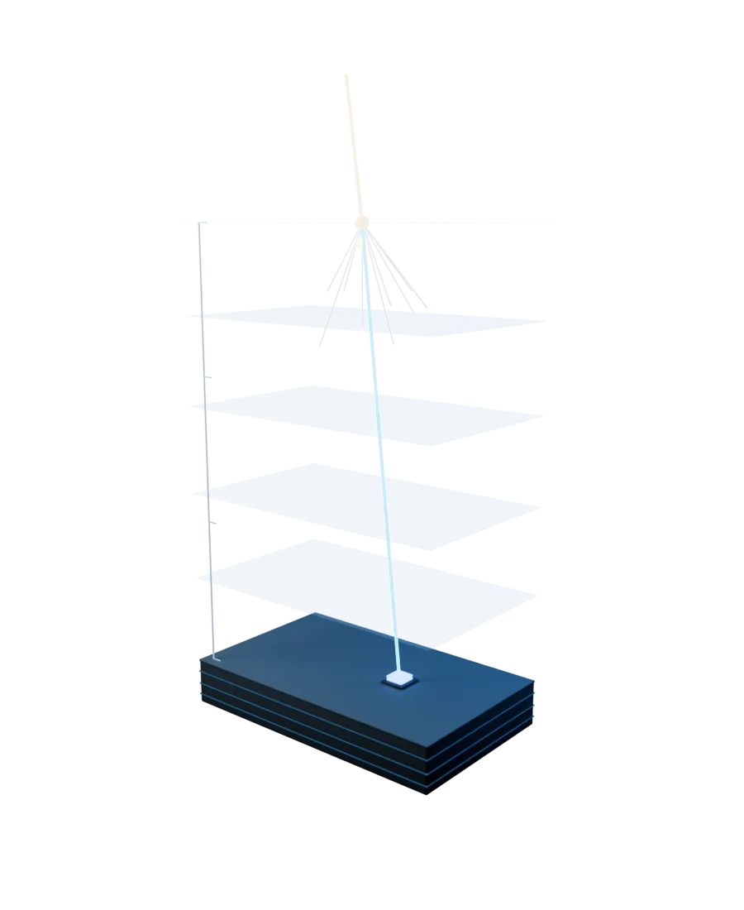
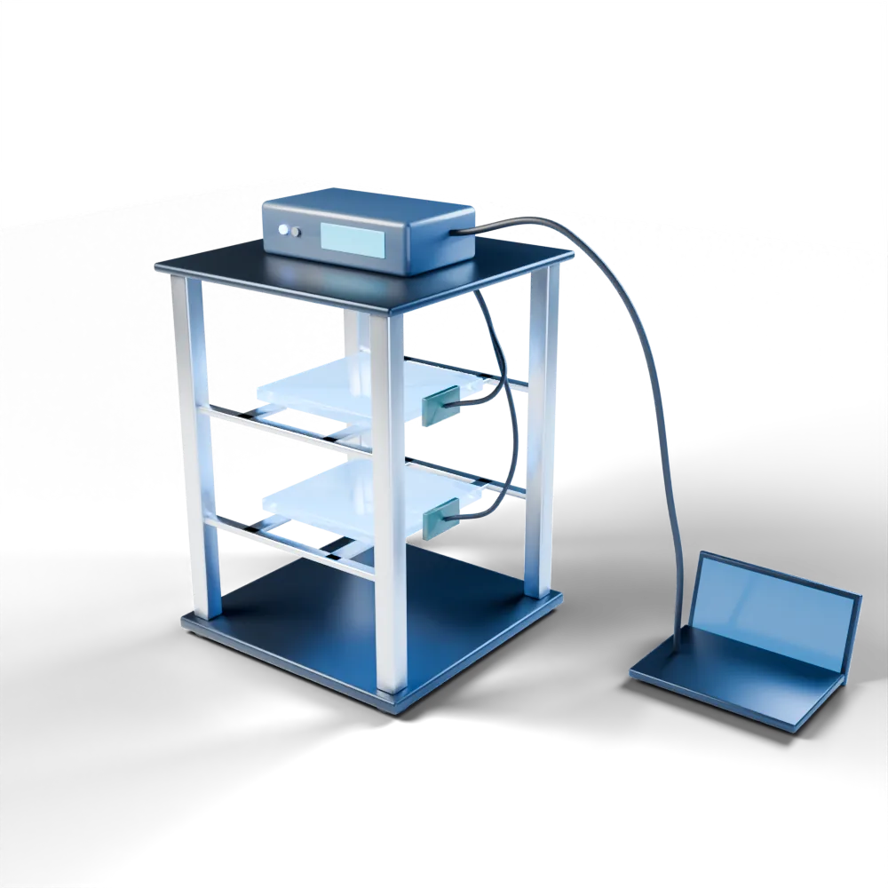

Malaysian high schoolers analyse real muon detector data using Python. Live proof of Einstein's relativity — right in your browser.

$ python3 analysis.py — 100,847 events loaded
muon flux: 1.04 ± 0.03 cm⁻² min⁻¹ ✓
Fig. 02 — Why muons reach the ground: your first measurement of the day.
Cosmic rays — high-energy particles from distant stars and supernovae — constantly bombard Earth's upper atmosphere. When they smash into air molecules, they produce a shower of new particles called muons.
Muons travel toward Earth at nearly the speed of light. Their lifespan is just 2.2 millionths of a second — they should decay long before reaching the surface. Yet they arrive in their millions every minute.
This is Einstein's Special Relativity in action. At near-light speeds, time slows down for the muon — giving it enough time to complete the journey. Every detection is live proof that time is not absolute.
Every second, hundreds of muons pass through your body.
In this class, you will catch them.
Data from real detectorYou won't watch slides. You'll write Python code and make actual measurements with data from a real particle detector — exactly how professional physicists do it.
A 30-minute sample lesson: count muons in detector data, measure their flux, and test Einstein's relativity. Python runs in your browser, nothing to install.

Fig. 03 — The two-scintillator muon detector behind your dataset. Tiles are 150 × 150 mm.
The data you analyse comes from a real two-scintillator muon detector — the same core technology used in high-energy physics labs worldwide, miniaturised for education and fieldwork.
You won't just learn about a muon detector. You'll analyse data from one — the same way physicists do at CERN, Fermilab, and KEK.
All sessions are live and interactive. Ask the instructor anything — they're a real particle physicist.
Teaching physics for years, I always told students about muons as evidence for relativity — but it remained abstract. Having real detector data to analyse makes the theory tangible in a way no textbook can.
Every student leaves with tangible outcomes — not just knowledge, but proof of what they can do.
Cosmic Lab is the starting point. Here is where it can take you.
Fill in your details below. We will send you a WhatsApp payment link within 24 hours to confirm your spot.
Payment is processed separately via WhatsApp Business after registration. You will receive a product payment link directly.